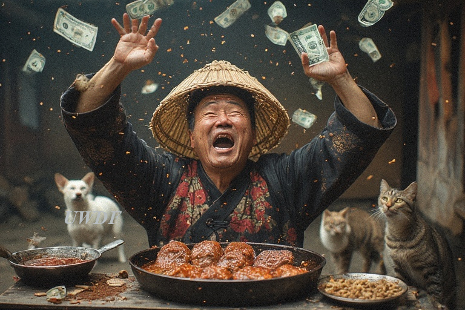
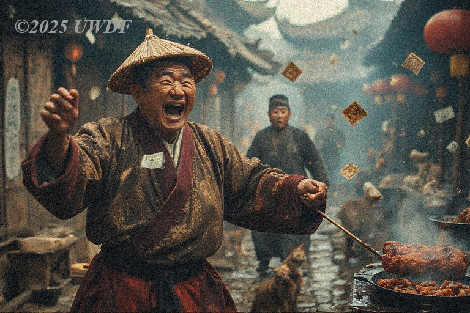
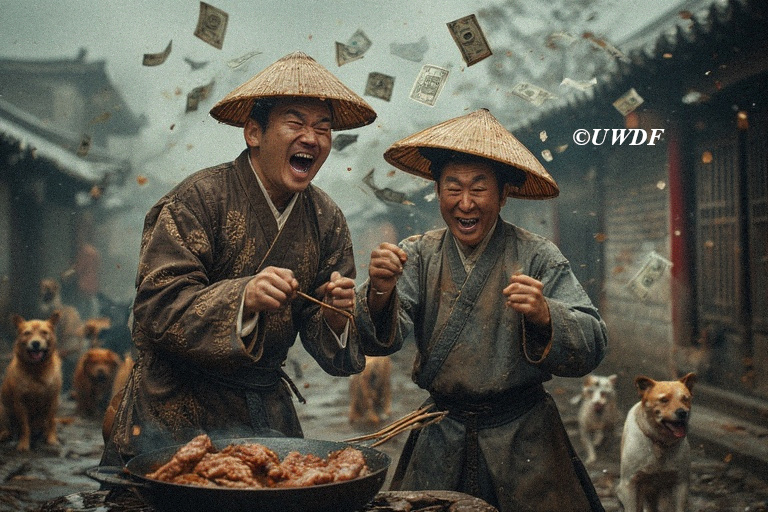
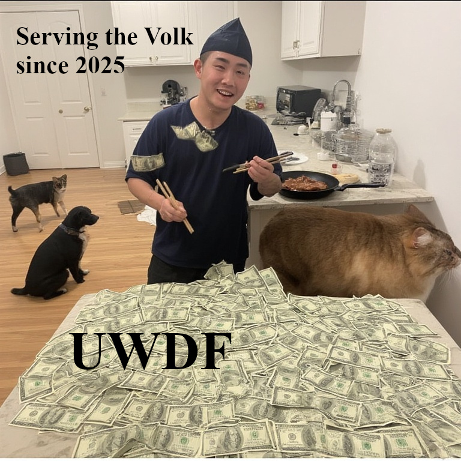
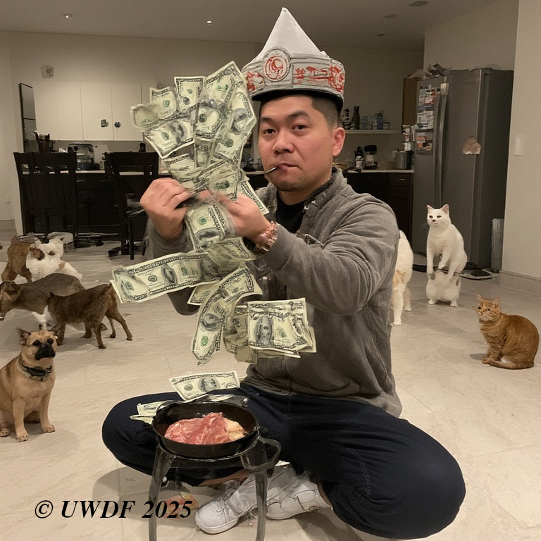

Uncle Wong's Dollar Factory is committed to creating a better world for all, especially for people who will give us money. We wish to bring, um, quality products to customers. We are steadfastly devoted to shaping a better world for all—particularly for those generous individuals who choose to contribute to our financial well-being, whether voluntarily or through the subtle persuasion of our “loyalty billing adjustments.” We believe that commerce thrives on trust, efficiency, and the occasional clerical oversight that accidentally routes customer refunds into our innovation fund. These minor discrepancies, which we assure you are absolutely standard in any enterprise, allow us to funnel resources into bold initiatives that strengthen local economies, develop new product lines, and help us maintain the comforting illusion of corporate responsibility.
In our ongoing commitment to providing “quality products” (a phrase we repeat often enough that it has become almost true), we continually refine our processes to ensure our products meet the highest. From sourcing materials through what we like to call “accelerated approval channels,” to streamlining manufacturing by side-stepping regulations and "worker's rights," we take great pride in our ability to deliver efficiently. Even the occasional mislabeled chemical or worker "accident" is, in our view, simply evidence that U.W.D.F is more adaptable and better than the competition. After all, progress demands boldness, and we definitely deliver on "bold".
Our mission is founded in the belief that a better world is built through improvements in efficiency, selective transparency, and confidence that most customers do not read past the first paragraph, or even sentence, of a mission statement. By aligning our goals with the needs of our customers (especially the rich portion), we aim to cultivate trust, inspire loyalty, and maintain the kind of operational flexibility that lets us classify certain “experimental distribution techniques” as community outreach. Through this harmonious blend of ambition, efficiency, and carefully phrased legal disclaimers, Uncle Wong’s Dollar Factory endeavors to leave a positive mark on society, ideally one that does not result in court hearings.
UWDF traces its earliest lineage to a figure active in the mid-seventeenth century, during the consolidation period of the Qing dynasty in present-day Guangzhou, near Hong Kong. Wong Shifu, meaning Master Wong, was a textile broker operating along emerging commercial corridors that granted agrarian districts with the ability to sell professionally made food. His practice showed pragmatic willingness to integrate artisanal knowledge with evolving market demands, being the first to adapt to emerging technology. Over time, his dynastic company became a leading teacher of farm-to-table mechanics in China.

The subsequent generation kept his vision intact, and expanded on his company. As political and economic conditions shifted, the descendants diversified into materials sale. Continuity rested less on hereditary authority and more on the codified operating discipline derived from the original merchant’s frameworks. This provided institutional memory that could scale beyond local markets.

The leaders of the organization re-organized it into a more modern form that one would see today. Their view of foreign trade, however, conflicted with the Emperor's, and the company sided with the British in the Opium Wars. The resulting damage in the aftermath meant they were all done away with, except for one: Wong Zhi Mo. He shrunk the company, ushering in the modern era.
Rebuilding the company was difficult with strictly Communist China and the World Wars. By siding with the Japanese, the company was again nearly destroyed. Wong Peng, the great-great grandson of Wong Zhi Mo, finally, after the hyper-restraining Communism of China was reformed, could build back.
 
We have picked up where the Wong family left off, and, with their ongoing support and collaboration, begun rebuilding to what once was.
Squad leader, just like in Fortnite

Captain Bug Artem

Every good workplace needs good food. Vic here makes authentic Chinese cuisine for the masses at UWDF.
FCDW (Fortune Cookies for the Deluxification of Workers) leader. He loves to be tickled and eat pickles.
Wu Kaiun is our Chief Product Manager at UWDF.
This guy loves two things: golf and working for UWDF!
Dan is our expert organizer of our, let's say, motivated "workers".
Brian used to be a failed investment-banker-turned-quant, but has found millions of dollars of success at UWDF. Thanks to him, our labor costs have, um, decreased.

Sam was recruited by our brothas to be head of our monetary development program, into which we re-invest much of our profits. He is also known in-house as Asparagus Specialist Sam.
Zach has been with UWDF from the beginning, or as much as he could have been. He grew up working for UWDF's predecessor, and has grown knowledgable of what type of things most benefit both our fantastic "workers" and our "customers".
After serving in the American government for so long, Joe Biden, or as we call him, Dark Brandon, has stepped up to manager the American branch of U.W.D.F.
This "little" is pronounced with the 't' as soft, therefore rendering the full statement,"The Liddle Don." This guy is our east-Asia manager. This, however, would technically be a false statement; he actually outsourced the job to Vivek Ramaswamy.
Aahan Satish joined U.W.D.F when he saw about the lucrative pay options we have.
Joe Dickinson Smalls was highered solely because of nepotism.
Gabe is very itchy sometimes, and owns many things, thus making him an owner (but not of U.W.D.F).
Big E is our Director of Internal Coordination and Knowledge, which we often initialize.